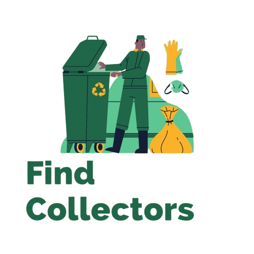
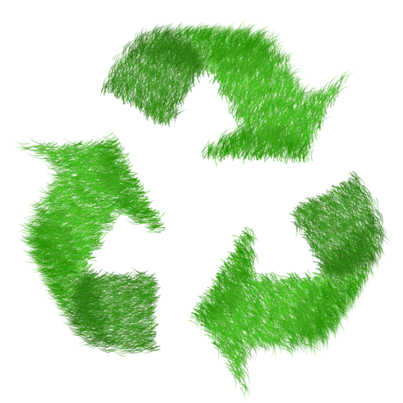

É uma aplicação que visa ajudar o meio ambiante por meio da tecnonogia
O problema de lixo é uma das 11 dos Objetivos de Desenvolvimento Sustentável da ONU
O Find Collectors é um projeto inspirado no 11° objetivo da ONU que se diz respeito a comunidades e cidades sustentáveis, com esse problema em pauta decidimos então iniciar um projeto com o objetivo de criar uma rede de contatos sustentável e beneficente para pessoas que cuidam do meio ambiente e também informar da importância da reciclagem e incentivar outras pessoas a reciclar. O sistema tem como objetivo realizar cadastro de catadores de recicláveis contendo a sua localização para que as pessoas possam levar o lixo até os catadores ou também será possível combinar uma coleta entre as duas pessoas.
Após cada coleta confirmada, será gerado um bônus entre para o catador e o reciclador, com o objetivo de fomentar a reciclagem do lixo. Os pontos gerados por esse bônus serão utilizados para trocar em produtos ou serviços com as empresas parceiras e que apoiam a ideia do Find Collectors. Com esse projeto esperamos conseguir atrair cada vez mais pessoas para reciclagem melhorando a sustentabilidade, a qualidade de vida de cada um e aumentar a renda dos catadores de reciclável.

